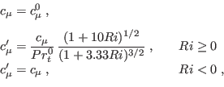

Next: The Schumann and Gerz Up: The turbulence model Previous: The quasi-equilibrium stability functions Contents
INTERFACE:
subroutine cmue_ma(nlev)DESCRIPTION:
This subroutine computes the stability functions according to Munk and Anderson (1948). These are expressed by the empirical relations
|  | (198) |
USES:
use turbulence, only: cm0_fix,Prandtl0_fix use turbulence, only: cmue1,cmue2,as,an IMPLICIT NONEINPUT PARAMETERS:
integer, intent(in) :: nlevREVISION HISTORY:
Original author(s): Hans Burchard & Karsten Bolding